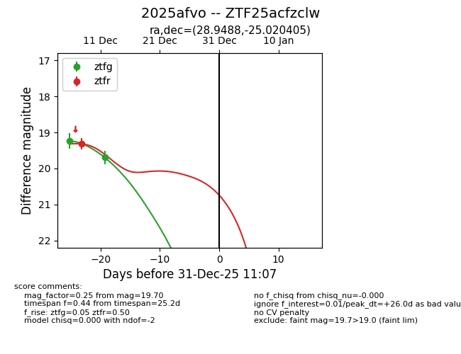
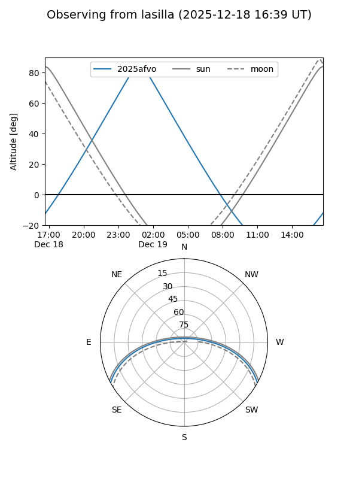
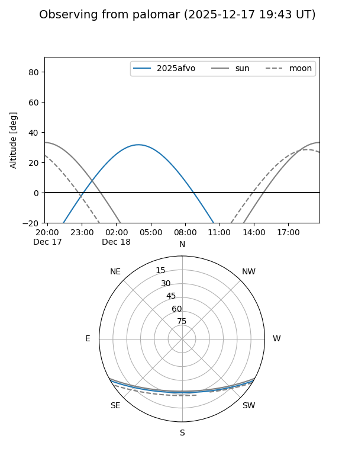

2025afvo
Target 2025afvo at 2025-12-18 11:17
Aliases and brokers:
FINK: fink-portal.org/ZTF25acfzclw
Lasair: lasair-ztf.lsst.ac.uk/objects/ZTF25acfzclw
ALeRCE: alerce.online/object/ZTF25acfzclw
TNS: wis-tns.org/object/2025afvo
YSE: ziggy.ucolick.org/yse/transient_detail/2025afvo
alt names
ZTF25acfzclw (ztf,fink_ztf)
2025afvo (tns,yse)
Coordinates:
equatorial (ra, dec) = 28.9488,-25.02041
equatorial (HMS+DMS) = 01:55:47.70,-25:01:13.46
galactic (l, b) = (208.2433,-75.40583)
Photometry
last ztfg=19.70, ztfr=19.32
2 ztfg, 1 ztfr detections
Lightcurve

Visibility


Additional plots